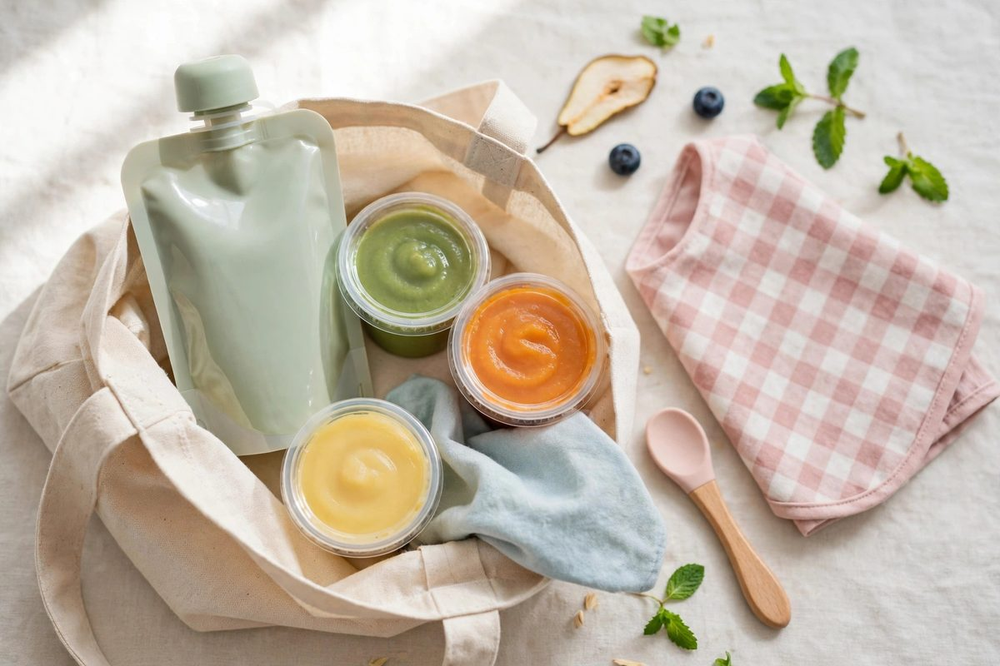

Home » Guides
Baby Food on the Go

Feeding a baby away from home takes a little planning, but it does not need to be stressful. With a small kit, some finger foods, and a few tricks for keeping food cool and safe, you can feed your baby well on days out, on holiday, or at a family gathering. This guide covers what to pack, which foods travel well, how to keep food at a safe temperature, and what to do when there is no kitchen nearby.
What to pack
A small insulated bag, an ice pack, a couple of small containers, a spoon, a bib, wipes, and a water bottle cover most situations. Pack a meal that does not need heating, such as a sandwich, pasta, or finger foods, plus a backup snack in case the first choice is refused. Bring a small pot of yoghurt or fruit if you have a cool bag. Keep the bag simple: the more you pack, the harder it is to find anything. A spare change of clothes for your baby is always worth packing too, because meals on the go are often messy.
Foods that travel well
The best travel foods are those that do not need reheating and do not spoil quickly. Sandwiches with cream cheese, banana, or avocado, cooked pasta pieces, toast fingers, rice cakes, and soft fruit all travel well. Cooked chicken strips, cheese pieces, and hard-boiled egg keep for a few hours in a cool bag. For younger babies, bring a small pot of homemade puree in a cool bag and serve it at room temperature. Avoid foods that need to stay hot, and avoid anything that goes soggy quickly, such as food with a lot of sauce.
Keeping food safe
Keep cold food cold and do not leave it in a hot car. Use an ice pack and keep the bag out of direct sunlight. Use food within two hours if it is not kept cool, and throw away anything your baby has eaten from. Wash your hands or use wipes before handling food, and bring a clean spoon rather than using your fingers. If you buy food while out, choose simple, fresh options such as plain bread, fruit, and yoghurt, and avoid hot food that has been sitting out for a long time.
Eating out with a baby
Most cafes and restaurants are happy to warm a bottle or a pot of baby food if you ask. Choose a highchair if one is available, or bring a portable seat. Order simple foods for your baby, such as plain pasta, steamed vegetables, or bread, and ask for them without added salt. Bring a few familiar foods from home so your baby has something they like even if the menu is limited. Keep the meal relaxed: babies pick up on stress, and a calm parent makes for a calm eater, even in a busy restaurant.
A day out, step by step
A day out with a baby is easier with a simple plan. The night before, pack a sandwich, fruit, and yoghurt in a cool bag with an ice pack, plus a spoon, bib, wipes, and a water bottle. In the morning, offer breakfast at home, then set off with the packed lunch ready. At lunchtime, find a bench or a cafe, sit your baby upright, and serve the packed food. Offer water in a cup and a snack in the afternoon. Keep the bag light and the food simple, and remember that a relaxed parent makes for a relaxed baby, even when the day does not go exactly to plan.
Frequently Asked Questions
How long can I keep baby food out of the fridge?
Up to two hours at room temperature. In hot weather, keep it in a cool bag with an ice pack and use it sooner.
Can I take homemade puree on a plane?
Yes. Baby food is usually exempt from liquid limits on flights, but check your airline's rules and pack it in small, sealed containers.
What is the easiest food to take out?
Finger foods like sandwiches, toast fingers, banana, and cooked pasta pieces. They need no heating and little equipment.
Important: every baby is different. Always follow your pediatrician's advice on when to start solids, which foods to offer, and how to introduce allergens. The guidance on this site is general information, not medical advice.